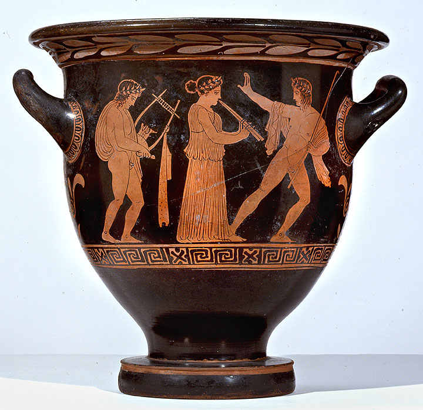

Title: Red-Figure Bell Krater
Primary: Attributed to the Kadmos Painter (Greek-Attic)
Nationality: Greek-Attic, Europe
Date: circa 420410 BCE
Medium: Terracotta
Dimensions: Overall: 13 1/8 in. (33.3 cm); Sheet: 13 1/8 in. (33.3 cm)
Credit Line: Blanton Museum of Art, The University of Texas at Austin, Archer M. Huntington Museum Fund and the James R. Dougherty, Jr. Foundation, 1980.40.
Object Number: 1980.40
Rights Statement: NO COPYRIGHT - PUBLIC DOMAIN
Collection Area: Antiquities
On View: Not on view
Keywords: male nude, man, woman, music, figurative
Collection Highlight: Ancient Greek, Roman, and Near Eastern Art 800 BCE-300 CE
The naked youth on left plays a lyre and a girl plays an aulos (reed pipe), while the youth to the right seems to direct movement with a torch, leading a lively procession. Reverse side: Three youths in conversation. Such generic scenes appear very frequently on the rear side of kraters in this period. Their meaning is ambiguous, but they may represent courtship.
Likely acquired in Italy between 1820-30, perhaps in England or Italy by 1841 by Spencer Joshua Alwyne Compton [1790-1851], 2nd Marquess of Northampton, Castle Ashby, Northamptonshire, England; by descent to Charles Douglas Compton [1816-1877], 3rd Marquess of Northampton; by descent to William Compton [1818-1897], 4th Marquess of Northampton; by descent to William George Spencer Scott Compton [1851-1913], 5th Marquess of Northampton; by descent to William Bingham Compton [1885-1978], 6th Marquess of Northampton; by descent to Spencer Douglas David Compton [b.1946], 7th Marquess of Northampton; sold (Christie's, London) July 2nd, 1980, The Castle Ashby Vases, lot 30.


0.0
[ 0 , 0 , 0 ]
| Plane | Position | Flip |
|
|
||
| Show planes | Show edges |